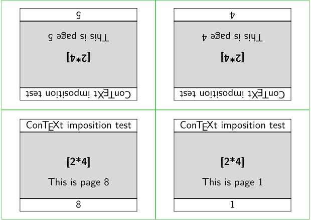
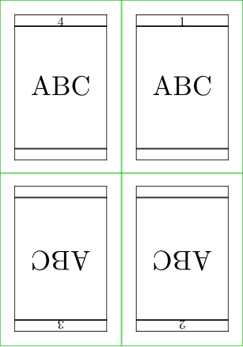

To impose means to place pages on a bigger sheet in such a way that one can fold and cut the sheet to get a booklet or something similar (wikipedia). Here are some examples:
- Placing four A5 pages on both sides of an A4 sheet: 1 and 4 on the back, 2 and 3 on the front.
- Placing 64 inner pages of a book on one printing sheet, to produce one signature.
- One of those brochures made by folding an A4 sheet into three pieces. One could typeset this brochure as two pages with three columns each, or once could make six pages and impose them.
- Printing address labels on an A4 sheet, eight labels per sheet.
In general, imposition is accessed in ConTeXt using \setuppaper and \setuparranging, or from the command line as follows:
context --pdfarrange=...
Contents
Imposition schemas
Default schemas
ConTeXt has some built-in imposition schemas (see "arranging pages" in the manual):
- 2UP : 2 pages next to each other, n sheets arranged for a single booklet
- 2DOWN : 2 pages above each other, n sheets arranged for a single booklet
- 2SIDE : 2 pages per form, side by side in pagination order, single sided only (no real imposition, only paper saving)
- 3SIDE : 3 pages per form, side by side in pagination order, as above for narrow pages
- 2TOP : 2 pages above each other, single sided only
- 2TOPSIDE: 2 odd pages on one side, two even pages verso, above each other
- 1*2-Conference :
- 1*4-Conference :
- 1*4 :
- 1*8 :
- 2*2 : section: one sheet 2 x 2 pages = 4 pages (2 pages per form, for single sheets with front and back)
- 2**2 : section: one sheet 2 x 2 pages = 4 pages (2 pages per form, for book ordering)
- 2*4 : section: one sheet 2 x 4 pages = 8 pages (4 pages per form, 2x2 pages head to head)
- 2*8 : section: one sheet 2 x 8 pages = 16 pages
- 2*16 : section: one sheet 2 x 16 pages = 32 pages
- 2*2*2 :
- 2*2*3 :
- 2*4*2 : section of 16 pages: 2 sheets, 4 pages front and backside
- 2*2*4 : section of 16 pages: 4 sheets, 2 pages front and backside
- 2*6*Z : 6 page zigzag folded flyer
- 2*8*Z : 8 page zigzag folded flyer
- ZFLYER-8 : another 8 page zigzag folded flyer
- ZFLYER-10 : 10 page zigzag folded flyer
- ZFLYER-12 : 12 page zigzag folded flyer
- MAPFLYER-12 : 12 pages, 6 pages front and backside, map folding
- DOUBLEWINDOW : 8 page window folded flyer
- TRYPTICHON : another 6 page flyer
- XY : one sheet with x rows and y columns, you can control the number with \setuppaper [nx=...,ny=...,dx=...,dy=...]
"form" means "one side of a sheet".
| TODO: some graphical examples (See: To-Do List) |
XY schema
Beware, you need to set up your XY arranging in the right order:
\setuppapersize[A7][A4,landscape] \setuppaper[nx=4, ny=2] % must come before \setuparranging! \setuplayout[page][location=middle, marking=on] \setuparranging [XY]
Here’s an example for Creating self-adhesive labels.
Testing schemas
Here's a convenient test file to help choose a schema or write a new one:
-
\def\Schema{2*4} \setuppapersize[A9,landscape][A7,landscape] % the schema being tested \setuparranging [\Schema] % Visuals \setupbodyfont[ss,10pt] \setuplayout [margin=0pt, width=fit, header=2.8ex, footer=2.8ex] \setupalign[middle,hilo] \setuppagenumbering [alternative=doublesided,location=footer] \setupheadertexts[\CONTEXT\ imposition test] \showframe \setupbackgrounds [text][text][background=color,backgroundcolor=lightgray] % Where the block of pages is placed on the sheet % (relevant if there is space left over.) \setuplayout [location=middle,marking=on] \startbuffer[Fakepage] \strut \blank \bold{[\Schema]} \vfill This is page \recurselevel \vfill \stopbuffer \starttext \dorecurse{16}{\getbuffer[Fakepage]\page} \stoptext
- 
Rearranging existing PDF s
ConTeXt is also handy when you need to rearrange an existing pdf into a booklet. This is a trial-and-error solution by Mari for rearranging an A4 pdf file into 2*8 spreads on A3 sheet (-> A6 pages when printed and cut). Not sure about the margins on the final A6 pages (the original has equal left and right margins, some extra inside margin might be a good thing), but at least otherwise this seems to do the trick:
\setuppapersize[A6][A3] %individual page A6 size, print size A3 \setuparranging[2*8,rotated] %makes an 8 page gathering when folded (duplex printing!) \setuplayout [backspace=0pt, topspace=0pt, width=middle, height=middle, location=middle, header=0pt, footer=0pt] \setuppagenumbering[alternative=doublesided] \starttext \insertpages [original_file.pdf][width=0pt] \stoptext
For proofing one sometimes wants to pick just some pages and when the original is A5, it is kind of handy to put them side-by-side for proofing. The command \filterpages allows you to define exactly what pages are needed. Be warned, though, that the page numbers refer to the pages in the pdf file, not the page numbers.
\setuppapersize[A5][A4] %individual page A5 size, print size A4 \setuparranging[2SIDE,rotated] %2 pages side by side, rotated to landscape to fit portrait A4 \setuplayout [backspace=0pt, topspace=0pt, width=middle, height=middle, location=middle, header=0pt, footer=0pt] \setuppagenumbering[alternative=doublesided] \starttext \filterpages [file.pdf][2,5,16:19][width=0pt] %picks pdf pages 2, 5, and 16-19. \stoptext
For more information, see the article on Including pages from PDF documents.
Custom imposition schema
You can create a new imposition schema to meet your needs. To do so, take a look at the imposition definitions stored in page-imp.mkiv and find the closest one to work with. You can access the file online:
https://source.contextgarden.net/tex/context/base/mkiv/page-imp.mkiv?search=installpagearrangement
Let's say we want this page arrangement on one sheet (R = page upside down):
P4 P1 R3 R2
This is a mirrored/reversed version of \setuparranging[1*4], which gives:
R1 R4 P2 P3
-
% Adapted from page-imp.mkiv \installpagearrangement 1*4*reversed {\dosetuparrangement{2}{2}{4}{3}{3}% X,Y,Total,hcutmarks,vcutmarks \pusharrangedpageFOURSINGLESIDEDFOLDEDREVERSED\poparrangedpagesTWO\relax} \def\pusharrangedpageFOURSINGLESIDEDFOLDEDREVERSED#1% {\advancearrangedpageN \reportarrangedpage\arrangedpageN \ifcase\arrangedpageN \or \handlearrangedpageXandY{#1}010\arrangedpageA % 1 rot,hskip,vskip \or \handlearrangedpageXandY{#1}111\arrangedpageA % 2 \or \handlearrangedpageXandY{#1}101\arrangedpageA % 3 \or \handlearrangedpageXandY{#1}000\arrangedpageA % 4 \poparrangedpages \fi} \setuppapersize [A10][A8] \setuparranging [1*4*reversed] \setuplayout [margin=0pt, width=fit] \showframe \starttext \dorecurse{4}{\vbox to \textheight{\vfill\midaligned{\tfd ABC}\vfill}\page} \stoptext
- 
If it is necessary to have a different imposition scheme for the second page it is possible to create an arrangement that spans two physical pages. As an example the following schema arranges the pages like this
P4 P1 R3 R2 P5 P6 P7 P8
-
\installpagearrangement 1*4*reversed*1*4 {\dosetuparrangement{2}{2}{4}{3}{3}% X,Y,Total,hcutmarks,vcutmarks \pusharrangedpageFOURSINGLESIDEDFOLDEDREVERSED\poparrangedpagesAB\relax} \def\pusharrangedpageFOURSINGLESIDEDFOLDEDREVERSED#1% {\advancearrangedpageN \reportarrangedpage\arrangedpageN \ifcase\arrangedpageN \or \handlearrangedpageXandY{#1}010\arrangedpageA % 1 rot,hskip,vskip \or \handlearrangedpageXandY{#1}111\arrangedpageA % 2 \or \handlearrangedpageXandY{#1}101\arrangedpageA % 3 \or \handlearrangedpageXandY{#1}000\arrangedpageA % 4 \or \handlearrangedpageXandY{#1}000\arrangedpageB % 5 \or \handlearrangedpageXandY{#1}010\arrangedpageB % 6 \or \handlearrangedpageXandY{#1}001\arrangedpageB % 7 \or \handlearrangedpageXandY{#1}011\arrangedpageB % 8 \poparrangedpages \fi}
-

The \arrangedpageA and \arrangedpageB are box registers that you can use to build up your desired output pages. They actually go up to \arrangedpageH.
Note: if your imposition scheme needs more than eight physical pages see below Imposition by signatures on how to interface with an external imposer program.
As you can see in
https://source.contextgarden.net/tex/context/base/mkiv/page-imp.mkiv?search=poparrangedpages.+
there are various alternative definitions of \poparrangedpagesAB that manipulate to box registers in different ways to output the desired imposition. The macro \installpagearrangement makes the generic \poparrangedpages use one of those alternatives (in this case \poparrangedpagesAB).
Cut marks
ConTeXt also allows to place cut marks. This can be controlled using the marking option of \setuplayout; possible values are:
- on show cut marks and page number
- screen ditto, but also print a grey-scale colour bar
- colour ditto, but also print a colour bar
-
text
print a text, defaults to
empty
The default settings are
\def\pagecutmarksymbol {\the\realpageno} \def\pagecutmarklength {.5cm} \let\pagecutmarktoptext \empty \let\pagecutmarkbottomtext \empty
To obtain register marks (or also called registration marks) you can use the small crop module which was posted to the mailing list.
Caveat: common troubles
Note that some features (e.g. table of contents, internal references) are always disabled in imposition mode. So, they will not be included in the pdf if you ask for imposition.
To get rid of this you can use the "arrange" key for the context command.
context --arrange yourFilename
This will run the document at first without page arrangement and impose the pages in a separate run after table of contents etc are created.
In SciTe/WinConTeXt you can run this command by choosing Process and Arrange in the Tools menu in SciTe.
Getting the last page of a Booklet
When you use imposition to print a booklet you want to put something on the very last page, the quadruple pagebreak did not always fill the remaining pages until you get a quadruple number of pages.
\unprotect \startvariables all nextquadruple: nextquadruple \stopvariables \installpagebreakhandler \v!nextquadruple {\ifdoublesided \!!counta\realpageno \!!countb\realpageno \advance\!!counta 4 \divide\!!counta 4 \multiply\!!counta 4 \advance\!!countb 1 \advance\!!counta-\!!countb \executepagebreakhandler\v!yes \dorecurse\!!counta{\executepagebreakhandler\v!empty}% \fi} \protect \setuppapersize[A5][A4] \setuparranging[2UP,rotated,doublesided] \setuppagenumbering[alternative=doublesided] \starttext \subject{Front Cover} \dorecurse{10}{\input tufte \par} \page[nextquadruple] Back Cover \stoptext
Getting to the Back Cover of a Booklet
When using imposition to print an a5 booklet (a4 folded in half) John Devereux wanted to specify content for the back cover, independently of the actual number of pages in the booklet. Here is a way that worked (thanks to Wolfgang Schuster on the mailing list). \page[beforequadruple] gets to the inside back cover. Another \page gets to the outside back cover.
\unprotect \startvariables all beforequadruple: beforequadruple \stopvariables \installpagebreakhandler \v!beforequadruple {\ifdoublesided \!!counta\realpageno \!!countb\realpageno \advance\!!counta 5 \divide\!!counta 4 \multiply\!!counta 4 \advance\!!countb 2 \advance\!!counta-\!!countb \executepagebreakhandler\v!yes \dorecurse\!!counta{\executepagebreakhandler\v!empty}% \fi} \protect \setuppapersize[A5][A4] \setuparranging[2UP,rotated,doublesided] \setuppagenumbering[alternative=doublesided] \starttext \subject Front Cover \dorecurse{10}{\input tufte \par} \page[beforequadruple] Imprint \page Back Cover \stoptext
Adding pages for imposition signature
With \setuppagenumbering[alternative=doublesided, there will always be an even number of pages. If you need to always have a multiple of four pages, use \page[quadruple] at the end of the document:
% Enable doublesided; there will always be an even number of pages \setuppagenumbering[alternative=doublesided,location=right] \starttext \completecontent \startchapter[title={A Chapter}] Text of chapter 1 \stopchapter \startchapter[title={Another Chapter}] Text of chapter 2 \stopchapter % Make sure there are a multiple of four pages in the document \page[quadruple] \stoptext
Is there is a case where the complex solution in the next section would be necessary?
Imposition by signatures
Sometimes you want a booklet, but the pages are too many to be folded together. This is true especially when the number of pages rises above 80. So you need to pass the output PDF to an imposer, like pdfjam or psbook or pdfpages. The problem is that you need to get the "right" number of pages.
E.g., if the original pages are 128, no problem, the signature is 64 and you can impose it without problems.
But, if the original pages are 129, the optimal signature is 44, so you need to add 3 pages during the PDF compiling.
First, create the following imposer.lua file
-- translated from perl to lua. Original code is in
-- http://theanarchistlibrary.org/docs/altools-6.6.tar.gz
local maxsignature = 80 -- define the maximum of the signature
local minsignature = 20 -- define the minimum of the signature
function optimize_signature(pages)
local originalpages = pages
-- be sure we don't mess up
assert(numberpage ~= 0, "I can't work with 0 pages")
--set needed pages to and and signature to 0
local neededpages, signature = 0,0
-- this means that we have to work with n*4, if not, add them to
-- needed pages
local modulo = pages % 4
if modulo==0 then
signature=pages
else
neededpages = 4 - modulo
end
-- add the needed pages to pages
pages = pages + neededpages
-- give a try with the signature
signature = find_signature(pages)
-- if the pages, are more than the max signature, find the right one
if pages>maxsignature then
while signature<minsignature do
pages = pages + 4
neededpages = 4 + neededpages
signature = find_signature(pages)
end
end
print("ImposerMessage:: Original pages: " .. originalpages .. "; " ..
"Signature is " .. signature .. ", " ..
neededpages .. " pages are needed, " ..
pages .. " of output")
-- let's do it
tex.print("\\dorecurse{" .. neededpages .. "}{\\page[empty]}")
end
function find_signature(number)
assert(number ~= 0, "I can't find the signature for 0 pages")
assert((number % 4) == 0, "I suppose something is wrong, not a n*4")
local i = maxsignature
while i>0 do
if (number % i) == 0 then
return i
end
i = i - 4
end
end
The ImposerMessage is important if you want to pass the output of the ConTeXt run to a script to do the imposing.
Then the master file
\def\fillthesignature#1{ \directlua{dofile("imposer.lua") optimize_signature(#1)}} \starttext \dorecurse{53}{ \chapter{test} \input tufte \section{\the\realpageno}} \page[yes] % reset the page \fillthesignature{\the\realpageno} And this is the last page (the backcover) \stoptext